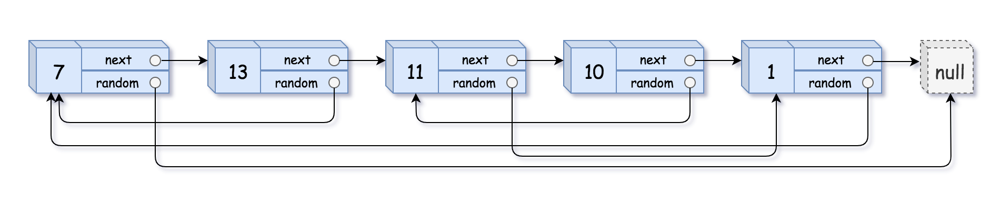

题面
给你一个长度为 n 的链表，每个节点包含一个额外增加的随机指针 random ，该指针可以指向链表中的任何节点或空节点。
构造这个链表的 深拷贝 。 深拷贝应该正好由 n 个 全新 节点组成，其中每个新节点的值都设为其对应的原节点的值。新节点的 next 指针和 random 指针也都应指向复制链表中的新节点，并使原链表和复制链表中的这些指针能够表示相同的链表状态。复制链表中的指针都不应指向原链表中的节点 。
例如，如果原链表中有 X 和 Y 两个节点，其中 X.random --> Y 。那么在复制链表中对应的两个节点 x 和 y ，同样有 x.random --> y 。
返回复制链表的头节点。
示例 1：

输入： head = [[7,null],[13,0],[11,4],[10,2],[1,0]]
输出：[[7,null],[13,0],[11,4],[10,2],[1,0]]示例 2：
输入： head = [[1,1],[2,1]]
输出：[[1,1],[2,1]]示例 3：
输入： head = [[3,null],[3,0],[3,null]]
输出：[[3,null],[3,0],[3,null]]提示：
0 <= n <= 1000-104 <= Node.val <= 104Node.random为null或指向链表中的节点。
思路
- 核心难点：链表无法随机访问，
random指向的节点不能直接定位。但用哈希表可以建立"原节点 → 拷贝节点"的映射，把任意节点的查找变成 O(1) - 两遍遍历：
- 第一遍：只管创建。遍历原链表，为每个节点创建拷贝节点
Node(cur.val)，存入 dict。此时 dict 的结构是{原节点: 新节点(只有val，next/random 都是 None)} - 第二遍：只管连接。再次遍历，通过
node_d[cur].next = node_d.get(cur.next)和node_d[cur].random = node_d.get(cur.random)把新节点的指针接好。因为第一遍已经把所有新节点都创建了，所以这里查 dict 一定能找到
- 为什么用
node_d.get()而不是node_d[]：cur.next或cur.random可能是None，get对不存在的 key 返回None，不会 KeyError - 易错点：
- 第二个 while 前必须重置 `cur = head`：第一个循环结束后
cur已经是None，不重置的话第二个循环直接跳过，所有新节点的 next/random 都是 None - 返回 `node_d.get(head)` 而不是 `node_d[head]`：如果输入是空链表（
head = None），dict 是空的，node_d[None]会 KeyError，而node_d.get(None)安全地返回None
代码实现
class Solution:
def copyRandomList(self, head: 'Optional[Node]') -> 'Optional[Node]':
cur = head
node_d = dict()
while cur:
node_d[cur] = Node(cur.val)
cur = cur.next
cur = head
while cur:
node_d[cur].next = node_d.get(cur.next)
node_d[cur].random = node_d.get(cur.random)
cur = cur.next
return node_d.get(head)- 复杂度：时间 O(n)，空间 O(n)（哈希表存了 n 个节点的映射）